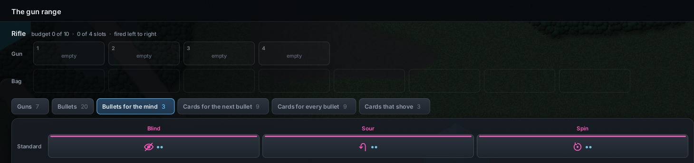

<title>Mind Bullets</title>
<meta name="claude:viewport-fit-sides" content="cover">
<link rel="stylesheet" href="https://fonts.googleapis.com/css2?family=Chakra+Petch:wght@600;700&family=IBM+Plex+Sans:wght@400;600&family=IBM+Plex+Mono:wght@400;500&display=swap">
<style>
/* One column; the four blind clips in a 2-up grid (one column on a phone), each with its counts under it in mono. Same system as the bullet-shapes page, with the Mind cards' rose for the accent. */
:root{
  --bg:#eef0ee; --panel:#e0e4e1; --fg:#161a19; --muted:#56605c; --line:#c5cbc7;
  --mind:#b02a78; --crystal:#137f95;
  --display:"Chakra Petch","Segoe UI",system-ui,sans-serif;
  --body:"IBM Plex Sans","Segoe UI",system-ui,sans-serif;
  --mono:"IBM Plex Mono",ui-monospace,Consolas,monospace;
}
@media (prefers-color-scheme: dark){:root:not([data-theme="light"]){
  --bg:#101413; --panel:#1a201e; --fg:#e8ece9; --muted:#9aa5a0; --line:#2b3330;
  --mind:#ff82cc; --crystal:#5fd0e3; color-scheme:dark}}
:root[data-theme="dark"]{
  --bg:#101413; --panel:#1a201e; --fg:#e8ece9; --muted:#9aa5a0; --line:#2b3330;
  --mind:#ff82cc; --crystal:#5fd0e3; color-scheme:dark}
body{background:var(--bg);color:var(--fg);font:16.5px/1.55 var(--body);
  padding-left:max(16px,env(safe-area-inset-left,0px));padding-right:max(16px,env(safe-area-inset-right,0px));padding-block:28px 64px}
main{max-width:1040px;margin:0 auto;display:flex;flex-direction:column;gap:34px}
h1,h2,h3{font-family:var(--display);text-wrap:balance;line-height:1.12;margin:0;letter-spacing:.01em}
h1{font-size:2.5rem;font-weight:700}
h2{font-size:1.5rem;font-weight:700}
p{margin:0;max-width:68ch}
section{display:flex;flex-direction:column;gap:14px}
.eyebrow{font:12px/1 var(--mono);letter-spacing:.1em;text-transform:uppercase;color:var(--mind)}
.lede{color:var(--muted);font-size:1.04rem;max-width:68ch}
ul{margin:0;padding-left:1.2em;display:flex;flex-direction:column;gap:8px;max-width:72ch}
li{min-width:0}
code{font:.86em var(--mono);background:var(--panel);padding:1px 4px;border-radius:3px}
.bar{display:flex;flex-wrap:wrap;gap:10px;align-items:center}
button{font:600 14px var(--body);color:var(--fg);background:var(--panel);border:1px solid var(--line);border-radius:6px;padding:7px 12px;cursor:pointer}
button[aria-pressed="true"]{background:var(--mind);color:#fff;border-color:var(--mind)}
button:focus-visible{outline:2px solid var(--crystal);outline-offset:2px}
.hint{font-size:.9rem;color:var(--muted)}
.quad{display:grid;grid-template-columns:1fr 1fr;gap:14px}
@media (max-width:720px){.quad{grid-template-columns:1fr}}
figure{margin:0;display:flex;flex-direction:column;gap:6px;min-width:0}
video{width:100%;max-width:100%;aspect-ratio:960/456;border-radius:6px;border:1px solid var(--line);background:#000;display:block}
img.still{width:100%;max-width:100%;border-radius:6px;border:1px solid var(--line);display:block}
.tag{font:500 12px/1 var(--mono);letter-spacing:.08em;text-transform:uppercase;color:var(--mind)}
figcaption{font-size:.92rem;color:var(--muted)}
.counts{font:12.5px/1.55 var(--mono);color:var(--fg);background:var(--panel);padding:7px 10px;border-radius:6px;overflow-x:auto;white-space:pre}
.short{background:var(--panel);border-radius:8px;padding:18px 20px;display:flex;flex-direction:column;gap:10px}
.rules{display:grid;grid-template-columns:repeat(3,1fr);gap:14px}
@media (max-width:720px){.rules{grid-template-columns:1fr}}
.rule{border-top:3px solid var(--mind);padding-top:10px;display:flex;flex-direction:column;gap:6px;min-width:0}
.rule h3{font-size:1.1rem;font-weight:700}
footer{font-size:.85rem;color:var(--muted)}
</style>
<main>
<header style="display:flex;flex-direction:column;gap:10px">
  <span class="eyebrow">Larder World · guns · step D · 2026-11-16</span>
  <h1>Mind bullets</h1>
  <p class="lede">The first bullet family of the gun-card plan: bullets that kill nothing and change how the slime senses for a few seconds. Every walker within 8 cells of the hit takes a status, and the slime's own movement rule does the rest, so what you see is the simulation, not an effect drawn over it. Three made it; a fourth (Lace) changed nothing you could see and was dropped.</p>
</header>

<section>
  <h2>The three statuses</h2>
  <div class="rules">
    <div class="rule"><h3>Blind</h3><p>Its sensors read nothing but walls, so it walks straight on and turns only off a wall, into water or fire too.</p></div>
    <div class="rule"><h3>Sour</h3><p>Its senses are flipped: it turns away from the trail and the food it would follow.</p></div>
    <div class="rule"><h3>Spin</h3><p>Every step it curls 35° more after its turn, so it walks in tight rings and stops advancing.</p></div>
  </div>
</section>

<div class="bar">
  <button id="slow" type="button" aria-pressed="false">Slow motion ×½</button>
  <span class="hint">Every clip loops, 11 s each. The status starts at 0:00.1 and ends at 0:10.1.</span>
</div>

<section>
  <h2>Can you name the status?</h2>
  <p>One of these is no status at all, and the other three are blind, sour and spin, in a shuffled order. Reply in the thread with which clip you think is which. That is this step's test: if two don't read apart by eye, they need to be bolder or merged.</p>
  <p class="hint">How they were made: one game on the Fork, the same up to 19.9 s. At 20 s one round goes off, free, on the thin vein in the middle of the view, with a 10 s status (the card's own is 6 s). The view is the game's own frames at zoom 8, 15 a second, 19.9 to 31 s, with the HUD cropped off (its card strip shows the loaded bullet).</p>
  <div class="quad">
    <figure><span class="tag">Clip 1</span><video src="quiz-1.mp4" autoplay muted loop playsinline></video>
      <div class="counts">walkers within 8 cells of the hit
  15 at 20 s · 19.1 mean over 21–30 s · 18 at 31 s
from 8 to 16 cells
  18 at 20 s · 27.5 mean over 21–30 s · 31 at 31 s
killed by the round 0 · slime at 31 s 24,854</div></figure>
    <figure><span class="tag">Clip 2</span><video src="quiz-2.mp4" autoplay muted loop playsinline></video>
      <div class="counts">walkers within 8 cells of the hit
  15 at 20 s · 12.1 mean over 21–30 s · 14 at 31 s
from 8 to 16 cells
  18 at 20 s · 25.5 mean over 21–30 s · 43 at 31 s
killed by the round 0 · slime at 31 s 24,759</div></figure>
    <figure><span class="tag">Clip 3</span><video src="quiz-3.mp4" autoplay muted loop playsinline></video>
      <div class="counts">walkers within 8 cells of the hit
  15 at 20 s · 11.2 mean over 21–30 s · 18 at 31 s
from 8 to 16 cells
  18 at 20 s · 14.9 mean over 21–30 s · 16 at 31 s
killed by the round 0 · slime at 31 s 24,883</div></figure>
    <figure><span class="tag">Clip 4</span><video src="quiz-4.mp4" autoplay muted loop playsinline></video>
      <div class="counts">walkers within 8 cells of the hit
  15 at 20 s · 11.9 mean over 21–30 s · 13 at 31 s
from 8 to 16 cells
  18 at 20 s · 20.6 mean over 21–30 s · 37 at 31 s
killed by the round 0 · slime at 31 s 24,858</div></figure>
  </div>
  <p class="hint">The counts are the game's own walkers, read each second. The vein is thin, so they are small numbers. The key is kept off this page.</p>
</section>

<section>
  <h2>In the game</h2>
  <p>Three new bullets, each 2 of the gun's budget, in the Mind cards' rose. The run's shop sells them as rolled bullets from planet 2, and they take their set's shape like any payload (buckshot blind is four small blind clouds). The gun range's armory has them on a tab of their own: on the bullets tab they put it on three pages at 200% UI.</p>
  <figure>
    <figcaption>The armory at 1920×1080: Blind (an eye struck through), Sour (a U-turn), Spin (a ring round a dot).</figcaption></figure>
</section>

<section class="short">
  <h2>Not settled</h2>
  <ul>
    <li><b>The 1070's frame cost is not measured yet.</b> It is booked for when the PC is back. Until the first Mind hit nothing runs. After it, each walker reads one more word a step, and each hit is one pass over the walkers.</li>
    <li><b>The numbers are first guesses:</b> 8 cells, 6 s, 35° a step. You can change them with <code>set=mind_r=…</code>, <code>mind_secs</code> and <code>spin_curl</code>.</li>
    <li><b>Both engines match exactly.</b> The GPU equals the CPU in the one-tick dish, the stamp, and the squad's frame with blind, sour and spinning walkers.</li>
  </ul>
</section>

<footer>Source, clips and counts: <code>Reports/gun-mind-2026-11-16/</code> in the repo. Clips by <code>raw/film.sh</code> and <code>raw/make_clips.py</code>.</footer>
</main>
<script>
(function(){
  var b=document.getElementById('slow');
  function set(on){
    b.setAttribute('aria-pressed',on?'true':'false');
    document.querySelectorAll('video').forEach(function(v){v.playbackRate=on?0.5:1;});
  }
  b.addEventListener('click',function(){set(b.getAttribute('aria-pressed')!=='true');});
})();
</script>
